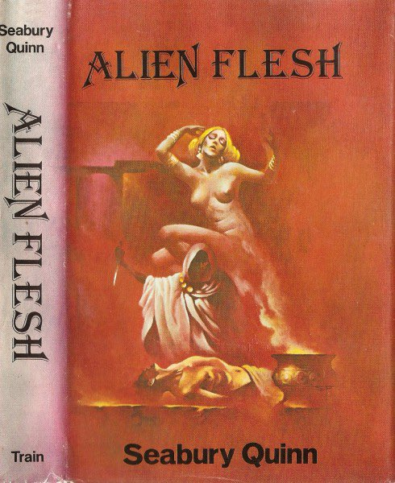

amber.jellyfish
@amber_medusozoa
@ServalCandle 好有意思

🌸猫宮すみか🎀
@ServalCandle
当然还有其他的小说_(:з」∠)_
它们都来自Seabury Quinn
Alien Flesh 1977
也是笨猫很喜欢的一篇
讲的是主角被邪恶巫师惩罚，被迫变成一个靓丽女性，但是被性别焦虑吞噬的故事
它还有一个短篇版本
Lynne Foster Is Dead!, 1938 https://t.co/CTnPEt2T4G